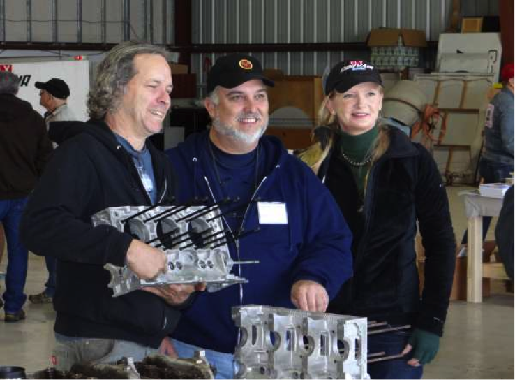

Our primary goal is to provide a safe and reliable powerplant for the Zenith. In order to do this, we are going to rebuild and repurpose an engine from a 1964 Chevy Corvair. The process of rebuilding the engine will give us plenty of hands on experience as well as help save cost.
The Corvair is a 100 horsepower, 6 cylinder boxer engine. It has been thoroughly tested in flight and has proven to be well suited for small aircraft, especially the Zenith.
William Wynne from Fly Corvair has agreed to help us through the entire process. William developed the conversion process in order to introduce more people to the hobby he loves. He will be able to supply us with all the aftermarket parts required to convert the engine for use in an airplane. He also runs a workshop called the "Corvair College" where builders work on the more difficult procedures together with his guidance.
New builders are trained to take apart and reassemble a small blower engine before they begin work on the Corvair. During this process, they will learn to properly use common engine working tools such as the torque wrench, flywheel puller, etc. This process is performed with extreme care to ensure that no accidental harm comes to the Corvair during construction. In order to further increase the quality of work, each build session is carefully monitored by one of the build team's more experienced members.
William Wynne and Fly Corvair will be our greatest assets in the conversion process. The process outlined in William's conversion manual has been thoroughly tested in the air. By adopting his procedures, we will eliminate any guesswork. Fly Corvair supplies all the necessary aftermarket parts we need to build a healthy, working aircraft engine. Our goal is to stay true to the procedures outlined in the manuals and make the safest, most reliable engine we can.
Once we are ready to perform the final assembly of the engine, we are going to take the engine to a Corvair College. William Wynne will guide us through the most difficult steps of the conversion and help us test our engine. Once we have his seal of approval, it's time to fly!